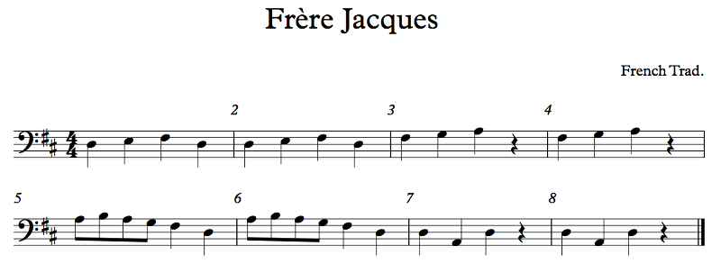
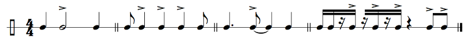
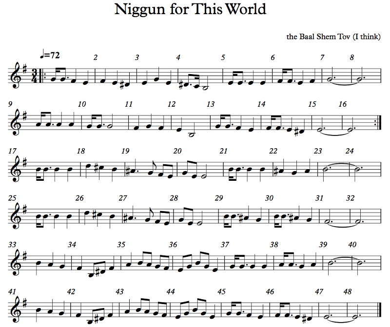
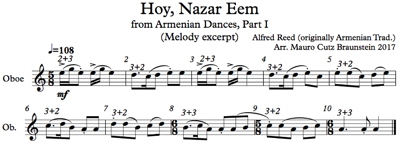
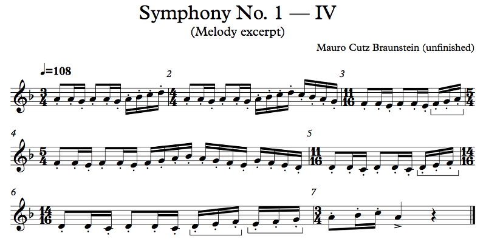
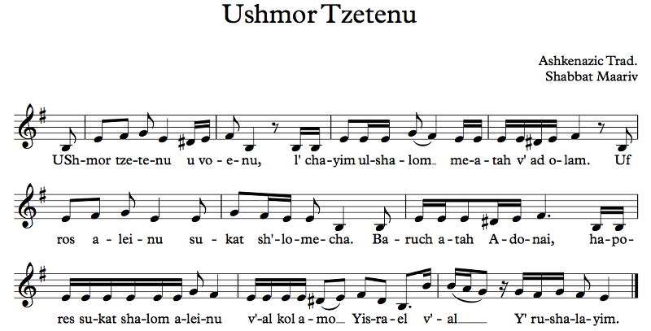
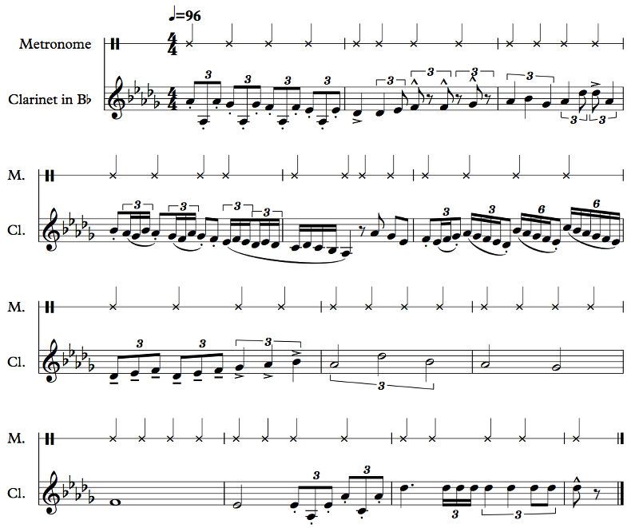
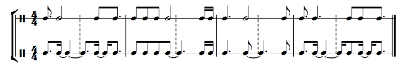
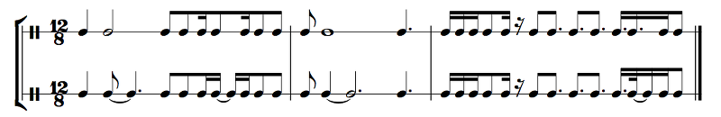
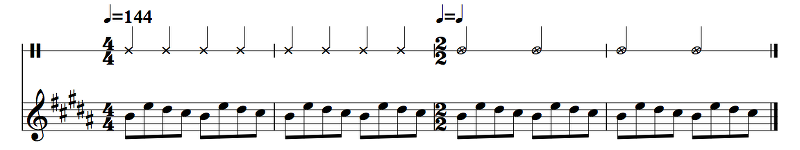

OFFTONIC THEORY
Chapter 2: Rhythm
We're going to spend this chapter talking about rhythm.
I thought that was last chapter.
It was, but we're not nearly done. There are still many things to cover, both trivial and vitally important.
Like what?
Let's start with the most important:
Meter and Time Signatures
Meter is the rhythmic framework for the music. That may not make sense right away, so let's look at a simple example, Frère Jacques (which you should definitely try singing/playing yourself before listening to my version):
4/4
Example 2.1
In 4/4, we have four beats each measure, each of which is a quarter note. But the downbeat, beat 1, is stronger than the others, and beat 3 is stronger than 2 and 4. So you have something of a strong weak medium weak pattern with the beats. I added dynamics to the recording above so that you can hopeully hear this pattern.
Do I have to play 4/4 this way?
See Chapter 0! No, you don't have to play 4/4 this way, and if you write 4/4 you don't have to mean for it to be played this way either. But it's the natural way to do it, and unless you indicate otherwise, it's just the way it will come out. You can use accents to change the stresses; when the stressed notes don't correspond to the stressed beats, that's called syncopation. Here are some examples of that:
Example 2.2
I know you're gonna ask, so: the clef is just an alternate version of the percussion clef. I didn't know it existed either, but Sibelius has it. Whatever. The double bar line is used to separate sections of music, and it doesn't have any actual effect on the music. It's just for the reader to visually distinguish one part from another. And the last measure shows that you can beam rests to notes! That's not by any means required, but isn't it easy to visually distinguish the beats now? How would it look with a bunch of individual 16th notes?
Now, in each of these measures, there's some syncopation going on. In measure 1, the half note on beat 2 is strong and there's nothing on beat 3 (other than a continuation of the half note), but beat 2 is weak. In measure 2, the quarter notes are on the offbeats.
Offbeats?
Yeah, see how they're not on the beats? Those quarter notes are on the and of 1, the and of 2, and the and of 3 (remember how to count rhythms from Chapter 1). This kind of thing is really popular in marches and similar music, where there's some sort of "oom-pah oom-pah oom-pah" beat going on. The "pah" of "oom-pah" is the offbeat.
Measure 3 is a very common rhythm. Try clapping that rhythm while tapping your foot on 1 and 3. The second note comes early, before beat 3, so this is an example of syncopation as well. Measure 4 is an interesting case. The non-funky version of this rhythm would just be straight eighth notes, but to make it funky, a bunch of those eighth notes are hit a 16th note early. Syncopation is funky. BUT. Unless you want to give up the funk entirely, don't fuck up the timing on the last two eighths. A bunch of stuff is early, sure, but those two eighths have to be on time.
Why?
Fool. The funk is not explained. It is felt. Seriously, though, the magic of jazz, funk, etc. is when it all clicks together, and if you're early on notes that are supposed to be on time, you're rushing. If you rush the funk, it no longer has that precision and togetherness.
Another important thing about 4/4: while the strong beats are 1 and 3, the high beats are 2 and 4. So, if you have a low action and a high action, you put the low action on 1 and 3 and the high action on 2 and 4. A simple way to see this is to tap your foot and snap. Tapping your foot has a low pitch; put it on 1 and 3. Snapping your fingers has a high pitch; put it on 2 and 4. So you get something like "boom snap boom snap boom snap boom snap". Here's a simple drum beat that illustrates this concept:

Example 2.3
Sweet beat! But, uh, what's going on in the third measure? I really don't get it.
First, B.D., S.D., and Ride Cym. are Bass Drum, Snare Drum, and Ride Cymbal, respectively. Bass and snare are actually always at those spots on the staff, but the other percussion is less standard; still, it's always good to label. If you just look at the bass and snare, you can see that the bass goes on 1 and 3 (though not just) and the snare goes on 2 and 4. In the second half of this beat, you can see that this thinking is taken to a higher level: the ride cymbal is higher than both the bass and the snare, so you get low-high-medium-high-low-high-medium-high. Of course, you don't have to stick to this kind of pattern, but it is the most natural way of doing it. There's also the fact that the ride cymbal is a weaker sound than the snare, so if you had the snare on the offbeats and the ride on 2 and 4, your music would sound very lopsided.
Wait, no, you still didn't answer. I mean, what's with that random eighth rest? How do you even read that?
Ah, that's what you meant! My apologies. Look at the stem directions in the first to measures, and now look at the stem directions in the last two. What's happening in the last two measures is that there are two voices on the same staff. So you have the bass/snare thing with the stems pointing down in the lower part of the staff, and at the same time, at the top of the staff, you have the cymbal with stems pointing up. You're supposed to read both of these voices at the same time. So that eighth rest applies only to the upper voice.
And why are they X's instead of regular notes?
Meh. Convention, I guess.
Also: C?
Where? Oh, right, there! That's the time signature. C stands for Common Time, which is 4/4. I personally don't like to use it just because I don't think there should be anything special about 4/4, but some people do use it.
Now, 4/4 is generally considered to be a simple quadruple meter. Quadruple means that there are four beats each measure, and simple because each beat is divided into two. We'll very soon see meters that do something different. 4/4 isn't the only simple quadruple meter, but as we'll see, it depends on how it's played. 4/8, 4/2, 4/1, etc. are also simple quadruple meters (recall that in 4/8, there are 4 beats, each of which is an eighth note; in 4/2, there are 4 beats, each of which is a half note; in 4/1, there are 4 beats, each of which is a whole note). So let's go to 4/4's closest cousin (again, you should try singing the example yourself before listening to the recording):
2/4

Example 2.4
What's a side drum?
It's essentially big snare drum. The reason why a snare drum makes that rattle is because there are these little beads held against the lower drum head, so when the head vibrates, so do all these little beads. That said, for some people side drum is just another term for a snare drum.
Also, why does this sound so high? I played it on the keyboard but this was an octave higher!
Ah, yes, the piccolo sounds an octave higher than written. Yes, I know, it makes no sense, but that's how it goes. You just need to know that information. There are several instruments that actually sound in a different octave from the one written. Remember when I said that guitar uses tenor clef (not the C clef, I mean the treble clef with an 8 below it that tenors actually sing from)? That's not usually true. The guitar usually just reads regular treble clef. It just sounds an octave lower than written, so the written C5 actually sounds like C4, Middle C. With the piccolo, it's the other way around; the written C5 sounds like C6.
Anyway, Escravos de Jó is a Brazilian children's song that's sung as part of a game involving passing objects, and it can also be sung as a round (with different people starting the song at different times). I'm not exactly sure how that game works, but you smack the object on the table on the downbeats. What this means is that beat 1 is always strong, and beat 2 is always weak. In 4/4, beat 3 is medium, but there is no medium beat here, just strong and weak. Hopefully the drum part helps you understand that. In fact, beat 2 is possibly too weak, and maybe this should have been written in 1/2 instead of 2/4, but that's actually just not something that's done.
What is actually preventing me from writing this in 1/2?
Literally nothing, though you will confuse people. If there's a conductor, the conductor may conduct this piece in 2 — that is, actually mark 2 beats per measure — or in 1 — mark just the downbeat. It's really going to be up to the conductor how to interpret this music.
And why can't a piece in 4/4 actually just be in 2/4 with twice as many measures?
That's a good question, and the answer is that it can. However, 4/4 is conventionally interpreted as having a strong-weak-medium-weak pattern, while 2/4 is conventionally interpreted as having a strong-weak pattern. The 4/4 pattern is longer. Strong beats in 4/4 happen every 4 beats, but strong beats in 2/4 happen every 2 beats. Also, 4/4 is easier to read, in my opinion.
Is there a way to tell by listening whether a piece is in 2/4 or 4/4?
NO! There is not! In fact, you can't tell the time signature at all by listening! A piece that sounds like it's in 4/4 may actually be in some completely off-the-wall time signature with lots of tuplets or syncopation, or it could be in 4/2 or 3/8 with very small subdivisions or really anything. The only thing you can tell by listening is what time signature makes the most sense for the piece. But the composer might well not have had any sense! Time signatures are purely written phenomena. The meter is not. You can listen to a piece of music and tell that it's in duple compound meter or triple simple meter or what have you. But you can't know what is actually written in the sheet music until you look.
In any case, 2/4 is duple simple meter. Simple because beats divide into two eighth notes, and duple because there are two in each bar. These terms, by the way, almost never come up in real life. Still, it's good to know them. Let's now go to 2/4's closest cousin, 2/2! In the following score, you may want to try to sing through every line, but the important one is the melody in the clarinets. Just pick an octave.
2/2


Example 2.5
I hope this song is familiar! The Stars and Stripes Forever, America's national march! (TIL: Sousa himself wrote lyrics, and I actually knew one of the verses already.) For all of the examples, I've just been writing things by ear, but for this one I actually found the score on IMSLP. Please allow me to stress how great IMSLP is. Of course, while IMSLP is great, some of the publishers are not so great, and on IMSLP are two scores, a condensed score and full score in Sousa's original hand. The condensed score was missing the drum part, and the manuscript score is completely illegible. Luckily there is also a set of complete instrumental parts, and I copied the drums from there. (Note that I didn't bother labeling the bass drum and snare drum for you; they should be obvious by now. Also, Sibelius's sounds are pretty great but not perfect; I had to make some compromises with the drums to make things sound OK, and the bass drum you're hearing here is actually a floor tom. Oh well.)
I AM SO CONFUSED! First, 2/2? That's a ¢, a cent sign.
Just like the C means Common Time, 4/4, the C with a vertical bar means Cut Time, 2/2, also known as alla breve. This is a simple duple meter: two beats per measure, so it's duple, each of which is a half note that gets subdivided into two quarter notes, so it's simple. Next question?
What's the little p? And the weird angle thingies at 15 and 16?
We will get to those! The p means "soft", and the weird angle thingies, also known as hairpins, tell you to get gradually louder or softer, depending on whether they get wider or narrower. By the way, why is a march soft, anyway? Well, this is just an excerpt. It was a lot louder right before this section, and it gets a whole lot louder right after it. I picked this section because it has less stuff going on so it's easier to transcribe. I recommend finding a recording of the whole thing on YouTube, ideally by a band, not an orchestra. Ain't no strings in Sousa's score!
There are so many notes at one time! How can I play/sing them all?
Each one is a different instrumental line. There are four separate horn parts, for example. The horn players are divided into these four parts, and some play Horn 1, some play Horn 2, some play Horn 3, and some play Horn 4. Actually, there are other instruments in addition to horns playing those notes; I just didn't bother showing them here. Same thing for the clarinet part; flutes and piccolos are an octave higher, there's a solo cornet (it's basically a trumpet — get mad at me later for saying that), saxophones, euphonium, etc. I just wanted to keep the size down so that you could actually read it. By the way, when you have a bunch of notes at the same time, that's called a chord. I already mentioned that earlier. In a few chapters' time you'll be able to identify each of the chords here as well as their harmonic functions, but just to give you a taste, the chord in the horns at measure 1 is an Ab major chord, and at measure 7 it switches to an Eb dominant 7th, and back to Ab major at 13. Don't worry if that made no sense to you right now. It will. Believe me, it will.
In the drum part, what are those little notes with the slashes?
Those are called grace notes, and they come just before the note they're attached to. On a snare drum, a note with a grace note before it is called a flam, and it's one of the fundamental rudiments of the snare drum. If you know how to make a flipped R sound, like in Spanish, the pattern employed in this piece goes "tra-ta-tum trum". Notice, by the way, that the flams happen regularly on the offbeats. Actually, let's talk about the meter of this piece, since that's what we're supposed to be talking about in the first place.
Up top, you may notice that I gave the tempo marking as half note = 120. That's not in the original score; that's just a tempo I thought was comfortable for this piece (some marches, like circus marches, are faster; on the other hand, British marches tend to be a bit slower and more stately). But the important thing is that the beat is no longer the quarter note. It's the half note. Try listening to the example and tapping along to the beat while following the melody line (the clarinets have the melody here). You might be used to counting the half note as two beats, but here it's just one beat.
So why not just write it in 2/4?
To be honest, I don't know. I personally get a more subdivided feel out of 2/2 than I do out of 2/4. Let me try to explain. In 2/4, there are two beats and that's it. In 2/2, I feel like the beats are fairly heavy, but you can still hear a bit of emphasis, not very much but just a little bit, on the quarter notes, that you don't feel with the eighth notes of 2/4. It might be just me. In fact, it probably is just me. I'm not sure Sousa himself would have thought this way. Ultimately, it's an arbitrary choice, and marches just happen to be written in cut time a lot of the time, so why not? So I get this somewhat indescribable feeling of broadness with 2/2 that I don't get with 2/4. Whatever. Maybe you feel it differently! It's up to you!
Why are the bar lines weird? Like, they join the three middle instruments but not the ones on the outside; what's up with that?
It's to make it easier to read scores. This score doesn't need it, to be honest, but full scores do. The idea is that the woodwinds are all bracketed together, the brass is all bracketed together, the percussion is all bracketed together, etc. (Some composers write for strings, too. Silly composers.) There's a standard order in which the instruments are listed called score order, and it's generally woodwings from high to low, then brass from high to low, then percussion in whatever order, then strings from high to low. THere are a lot of caveats here. First, it's also standard to keep instrument families together, so you'll have oboes and bassoons before you have clarinets and bass clarinets. Second, for some odd reason it used to be the fashion to put horns over trumpets, possibly because trumpets and trombones are in related families. Wind orchestra scores tend not to do that, but symphony orchestra scores still do.
Let's move on to a very different-feeling meter. Before listening to it, you should try playing/singing it on the syllable "ay", like "ay-ay ay ay, ay-ay ay ay", rhyming with Bill Nye (the Science Guy).
3/4
Example 2.6
A niggun is a melody without words, popularized by Chasidic Jews. I couldn't find a lot of information about this one, but one video on YouTube claims it's by the Besht, the Baal Shem Tov, the founder of Chasidism himself. Niggunim are a major component of Chasidic practice; Chasidim believe that while words bring God's understanding down to our level, melodies elevate our spirits to his. (I'm not a Chasid so I may be getting some of this wrong.) Every strain should be sung twice; there's some mystical reason for that too. For this purpose, even though 17-24 and 25-32 aren't identical, 25-32 counts as a repetition of 17-24, and same for the last two phrases.
It's pretty, but why does it sound sad?
Later on we're going to learn about major and minor modes, which are part of the answer to your question. However, the rest of your answer is simple: it's soft, it's slow, and it's played by a single (synthesized) violin. Recipe for sadness right there. The niggun itself isn't particularly sad, and if you were to have four hundred black-hatted Chasidim singing this at a tish, it would sound a hell of a lot happier!
This niggun illustrates 3/4. 3/4 is a triple simple meter: three beats per measure, and each beat is divided into two eighth notes. The basic pattern is strong weak weak, but how much stronger is the strong beat than the weak beats? In a slow tempo, you can really feel every beat, but speed it up a bit and beats 2 and 3 kinda stop being so pronounced. Here's a great example (that will be a lot harder to sing):

Example 2.7
This is the opening of Villa-Lobos's Valsa—Chôro, from his Suite Popular Brasileira. A suite is generally a set of dances — well, a classical composer's idea of what dances might sound like, anyway! This particular suite has five dances, but they all resemble one of Brazil's most characteristic genres of music, the choro (Portuguese for "cry", often in the diminutive, "chorinho"). Many pieces of music are broken into mostly independent parts; these parts are called movements. Most symphonies, for example, have four movements, and most sonatas have three. The Suite Popular Brasileira, being a suite rather than one of these other forms, happens to have five movements: Mazurka—Chôro, Schottish—Chôro, Valsa-Chôro, Gavotta-Chôro, and Chôrinho. Other than the last movement, the other four are all fairly old and established dances in the realm of classical music, but the waltz (Valsa—Chôro) is the one that's the most danceable in real life. I highly recommend that you find a recording of this on YouTube and listen to the whole movement; I only gave you the beginning, and my synthesized recording is crap compared to even any amateur guitarist, much less a good one.
Wow. There's a ton of shit going on here. What's this, three voices at once?
Yeah, but you already know how to deal with that, don't you? The difference here is that all of these voices are played by the same player, so if one drops out or all of a sudden there are more voices, it's not a big deal. These voices just help the player figure out the different things going on at once in the music.
How can I compose something with so many things going on? That must take genius.
Believe it or not, it's actually not so hard. I mean, yeah, it's pretty hard, but if you learn all the shit I'm teaching you, you're basically halfway there, and then it's just practice. I happen to like Villa-Lobos's music, maybe because I'm Brazilian myself and he captures some of the national essence in my opinion, but he's not any more of a genius than the many fine composers who live today, composing in all genres.
So, measure 24... What's that weird hat thing with a dot? Also, rall? A tempo?
We'll get to all of them in some more detail. The weird hat thing with a dot is called a fermata, and it means WATCH THE CONDUCTOR. ...Sorry, force of habit. It means you hold that note for longer, as long as you feel like holding it. Though, if you're playing in an ensemble with a conductor, it's as long as the conductor feels like holding it, so WATCH THE CONDUCTOR. The "rall..." is a rallentando, and it means to get gradually but dramatically slower, like a car getting to a stop sign (yes, I understand the irony). You may also see "rit...", which can stand for ritardando or ritenuto (the former will often be referred to as a ritard, which is not a slur against those with mental disabilities); that means the same thing but is generally less dramatic. If you're going from a faster tempo to a slower tempo gradually, you use a ritard. If you're essentially approaching a stop, you use a rallentando. That said, Villa-Lobos didn't do that here, so whatever. The opposite of a rit or a rall is an "accel...", accelerando, where you gradually get faster. You may also see stringendo for the same. Note that the Italian words for "a little", "poco", and "a lot", "molto", get used too, so if the slowdown is really dramatic, you may see "molto rallentando", while if the tempo is tightening just a little bit, you might see "poco stringendo". If the tempo changes with one of these, "a tempo" will get you back to the original tempo. By the way, I happen to like this piece at quarter = 108. That wasn't written in the score I copied from (though "Valsa lenta", meaning "slow waltz", was); it's my interpretation. So after the rallentando at 24, 25 goes back to quarter = 108. 32 is the end of the excerpt and it doesn't, but the piece does go on at the original tempo.
Let's pay attention to the meter, though. In a waltz, beat 1 is usually much stronger than beats 2 and 3. You can see how there's a strong bass on almost every single downbeat, and there's mid-range stuff on beats 2 and 3. Remember the "oom-pah" stuff we talked about earlier? In a waltz, it's "oom-pah-pah oom-pah-pah" instead of "oom-pah oom-pah oom-pah". Beats 2 and 3 are the equivalent of the offbeats (but they still are on the beats; we'll get to the meter when this changes).
Now, the tempo in 3/4 can actually get really fast, at which point you'd feel that every measure only has one beat. In the following example, you should try singing the upper line, and when there are weird notes with lines between them, sing the upper one, not the lower one.

Example 2.8
Heyyy! Mario music! This is pretty chill. And WTF are those things?
This is the underwater theme from the original Super Mario Bros. on the NES. The tune was transcribed exactly, except that I wasted a lot of time today trying to find a way to get chiptune sounds into Sibelius and I failed, so I figured I'd change the vibe entirely. In the original there are pulse and square synths as well as a noise synth for the percussion (don't worry if you don't understand what this means; we'll get to it in a much later chapter), but here I used steel drums, a harp, and a hi-hat. That weird thing at measure 5 is called a tremolo, and the way it works is you quickly alternate between those two notes for the duration of either note. So, in this case, you have a dotted half note G and a dotted half note E, so you quickly alternate between the G and the E for the duration of a dotted half note. It's easier to do on some instruments than on others, and the steel drum is one where it's a common and characteristic sound, so I decided to use it (it's definitely not in the original). Tremolos and rolls, where you just hit one note very quickly over and over, are the way percussionists have to make their notes longer. Once you hit the note, it goes away, so if you hit the note again and again, it won't go away. (Note: do not attempt this technique on your significant other.)
How come we got faster than in the previous piece but this one sounds more relaxed?
That's odd, isn't it? Take a look at the tempo marking first. This says dotted half note equals 72. So even though we're in 3/4, which generally means three beats per measure, each of which is a quarter note, this tempo marking appears to be saying something different: one beat per measure, each of which is a dotted half note. It would be nice to use a time signature that conveyed that, but unfortunately, we don't have a denominator for dotted half notes. I mean, you could have 1/(4/3), since a dotted half note is three quarter notes (and it's in the denominator so you take the reciprocal), but that would be weird. Nobody does that. (People do plenty of weird things with time signatures, but that's not one of them.) We don't need to do any such thing because we have a tempo marking that tells us how to feel the music: in 1, not in 3. So each measure still has a 1-2-3 thing going, but beats 2 and 3 are much weaker than beat 1, weaker still than in the Valsa—Chôro. There's still that "oom-pah-pah" feel, and from measure 5 on, we have the low note on the downbeat and higher stuff, including the hi-hat, on the upbeats.
This piece has one beat per measure, and it's subdivided into three quarter notes. It's actually our first example of a beat that isn't divided into two parts, but since there's only one beat per measure it kind of straddles the line. Let's look at a much clearer example in 6/8! The lines to sing are the top or bottom voices in the accordion (the middle voice is not very interesting). Actually, maybe sing the bass too. It's really easy.
6/8

Example 2.9
I know you have questions, but first things first: let's look at the time signature. We're in 6/8, which means 6 beats per measure, each of which is an 8th note. So why does it say dotted quarter = 144? Shouldn't it be eighth = something? 6/8, the vast majority of the time, is a compound meter: the beat is the dotted quarter, subdivided into three instead of two, unlike in the simple meters we've seen so far. You should be able to clearly feel two beats per measure here, not six (though do note the pickup, which is one full dotted quarter note beat). You should also note how the eighth notes are beamed in thees, like, for example, at measure 9. Eighth notes no longer come in pairs but in triples.
About the piece itself, this is the most well-known tarantella. The tarantella is a folk dance from southern Italy, and many composers have written their own takes on it, but this one just happens to be famous. I'm not sure if that's even the right name (Napoletana should mean that it's from Naples, but I don't know if that's actually true). The instrumentation is something I made up from the melody, though they do use accordions and tambourines (maybe not bass guitars, but then again maybe they do use those). Italian folk music actually uses compound meters quite often.
What's the weird dragon thing in the middle? And what's up with these repeats?
What dragon thing? ...Oh. Heh. Yeah, I guess it does kinda look like a dragon. I put wings on the repeats. Why? you may ask.
...
...You literally want me to ask?
It would be nice.
Oh, fuck you. OK. Why?
I'm glad you asked!
Fuck you.
I put wings on the repeats to make them more visible. The "weird dragon thing" in the middle is just an end repeat and a start repeat back to back; they just blend in together. Now, I don't normally put wings on my repeats, but Sibelius has an option for it and I figured you should see what that looks like, because some publishers do use these symbols. I haven't mentioned it until now because it's probably not relevant, but whenever you're at any sort of rehearsal, you should always have a pencil so that you can take notes in the music. It's an irresponsible waste of time to be told something by the conductor and then forget it at the next rehearsal because you didn't write it down. People write all sorts of things in their music. But if you forgot to take a repeat, you would definitely not be the first person to ever do so, and these wings help the repeat signs stand out. In your own music, you may add these wings so that you don't forget, or write a big "TAKE THE REPEAT YOU IDIOT" on the margin or something. (I've definitely done that before.) Speaking of taking the repeat, did you notice how, on the D.C., the repeat at measure 8 is not taken? Performance practice varies, but generally, it's understood that you don't take repeats on a D.C. There are a few different musical forms that work this way. For example, the classic minuet has a form that goes |:A:| |:B:| |:C:| |:D:| A B, where the A and B sections repeat on the first time through the piece, but on the D.C. at end, they don't repeat. This is mostly just convention, so you can feel free to write a piece that repeats on the D.C. Just mark it clearly!
What are those weird lines in the tambourine part?
That is called a roll. Technically speaking, it's a single-note tremolo and it means to divide the note into that many smaller divisions, so a quarter note with the three lines would actually be eight 32nd notes, a half note would be eight 16th notes, etc. In percussion, though, it just refers to a roll, which is when you hit the note as quickly as you can to make a longer sound. On the tambourine, there are two ways to do something like this: you can shake it, or you can run your thumb over the head, making it vibrate. This way is hard and hurts your thumb, but you get a more even sound.
Here's another piece in 6/8; sing/play the soprano line (the other lines are much less line-y).

Example 2.10
This is actually an original composition of mine, for solo/tenor duet and piano (well, more baritone than tenor, but whatever). It was unfortunate that we never got it performed, so if you want to record a performance, let me know and I'll send you the music! The words are from Tolkien, a poem in The Fellowship Of The Ring about Beren and Lúthien (hence the name, of course). Lúthien is also called Tinúviel, which is what the tenor interjects with here. This excerpt is the first half of the first stanza, out of nine stanzas. It's a long poem. For more, including a (synthesized) recording of the entire piece, you can check my music page. Note that the entire piece is in various forms of 6/8, with only one measure in 9/8 to highlight a particular crucial moment in the poem.
You wrote that? It's pretty. Will I learn to compose like that in this book?
I'm glad you like it! But no. You will not. You're responsible for your own imagination. I hope to give you the tools you will use to understand the components of such a composition, but you have to put them together yourself. For example, this section of the piece is in the dorian mode, which to me is associated with English countryside, medieval forests, that sort of thing. The constant rising motion in the bass, as well as the rising 16th note motif in the piano, help give this section a kind of ethereal feeling. I'm also fairly particular about which notes I use in those 16th note figurations; I'm careful with my harmonic implications there, and I also avoid straight arpeggios (that's when you play a chord one note at a time instead of all together; we'll talk much more about that eventually) in order to keep it complex. All these are things you should be able to think of yourself while writing a piece of music, even if you write EDM or ska or hip-hop instead of... whatever you call this. Western art music, usually.
This piece is an example of the slow kind of 6/8. You still feel the pulse in 2, but it's a subdivided 2. You feel all 6 beats in the measure, but the dotted quarter note is sitll the most important. Later in the piece things get faster, and it becomes a more traditional 6/8 at those faster spots. Note that the 16th notes are each an entire half of an eighth note beat here — don't rush!
Why does measure 4 have a dotted rest in the tenor? You said not to use dotted rests!
It's not just a dotted rest — it's a dotted rest followed by two eighth rests! Why not use a quarter rest? The answer is something we'll talk about in a bit: separation of subdivisions (also known as "the invisible bar line"). The dotted quarter rest is an entire beat. In 4/4, a dotted quarter rest is a beat and a half, so if you look at it, it's confusing. But in 6/8, that dotted quarter rest is a neat half of the measure, and when you look at it, you know that it's a complete beat. The eighth rests following are the subdivisions of the beat. The quarter rest is usually a beat, so if you saw it here, it would be confusing since it's no longer a beat. On the other hand, two eighth rests make it clear that the beat is divided into three.
But there are quarter notes, though.
Eh. Yeah, there are. I don't know. I guess it's just convention. We're all familiar with the quarter-eighth rhythm in 6/8, (and the same thing backwards, like in the second beat of measure 3), so we understand that, but the quarter rest would be contrary to our expectations.
The big picture here is that the most important job of music notation is to communicate the music to the reader. There's a lot of different stuff that goes into music notation, which is why we're spending so long talking about it, and somehow the reader needs to be able to scan it quickly and play it correctly without much effort. For that, the notation needs to be clear. If you need to sit there and think for a few seconds before you know what a chunk of music is supposed to be like, the composer (or the typesetter, or whoever) is wrong.
Dude. Rule 0.
OK, not "wrong". Merely "a jackass". How about that?
That's better.
That said, there are times when confusing notation is OK. One example is in music designed to confuse the musician to achieve some sort of artistic goal. Believe it or not, this is a thing. In the middle of the 20th century, composers would pull shit like this. They'd have a score that's just, like, a circle or something, and there'd be some vague directions for the musician (if you were lucky) that would be completely unhelpful in interpreting whatever abstract embodiment of whatever ended up on the page.
Anyway, back to the subject of meter.
Other (Regular) Meters
Are there other time signatures?
Yes, plenty! But our examples have been getting way too long, so I'll be briefer about them. First up, 12/8. 12/8 is just like 6/8 except that the measures are twice as long, so you'll have four dotted quarter note beats per measure: it's quadruple compound meter. You can also have 9/8, which is similar: a triple compound meter.
How do you know if a song is in 6/8 or 12/8?
By looking at the time signature. Duh. Because there's no way to tell by listening. There's never a way to tell by listening. But that's a bit too technical: how do you know if 6/8 or 12/8 is more appropriate? The answer is in the emphases. Remember how 4/4 has strong-weak-medium-weak? 12/8 is the same. 12/8 is like 4/4 but the beats have three eighth notes instead of two. And 6/8 is similar to 2/4, where the beats are strong-weak. However, you can always change the emphasis at will.
You can also have 3/8, which is usually a one beat per measure thing. See, we have such a strong association with the quarter note as the beat, or the dotted quarter, that 3/8 is generally much lighter than 3/4, even at the same tempo. But this is up to the composer. Technically speaking, there's no difference whatsoever between 3/8 with dotted quarter = something and 3/4 with dotted half = the same thing. Again, it comes down to how you want to communicate the feel of the piece to your reader.
In addition, you can go in the other direction: 6/4, 3/2, etc. What's the difference between 6/4 and 3/2? Generally, 6/4 is grouped as two sets of three quarter notes, while 3/2 is grouped as three sets of two quarter notes. You could have the quarter note be the beat for 3/2. I know it says it's three half notes, but the beat is actually whatever you want it to be. Say quarter = whatever and that's what the beat is. And, on the smaller end, you can do stuff like 9/16. I played a piece in 9/16 once... The fourth movement of Chabrier's Suite Pastorale. That's a crazy clarinet part! That has a kind of interesting meter, where it's kind of in 1 and kind of in 3. We think of 16th notes as very quick, so those runs of 16ths make sense as 9/16 rather than the heavier eighth notes in 9/8. JS Bach's Art of Fugue has a canon in 9/8 as well.
Irregular Meters
But are there other other time signatures?
There sure are! The melody to sing here is the top line on the piano:

Example 2.11
This piece, Reiach Tapuach, is in 7/8. It's a (modern) Israeli folk song about cute birdies and the smell of apples. I picked it because it has a very clear rhythm, and I arranged it for piano just now to really bring out that rhythm in the left hand. In this piece, the measures each have three beats, but... they have different lengths! The first beat has three eighth notes, while the second and third have two each. I wrote the tempo as dotted quarter = 104, but I could have done quarter = 156 or eighth = 310. I figured that going by the first beat in each bar made more sense, but the truth is that a simple metronome won't be able to keep time for you very well since the beats are irregular. On the other hand, they're not that irregular; every measure does it the same way. We say that each measure here is 3+2+2 — those are the lengths of each of the three beats, in eighth notes — but it could just as easily be 2+2+3 (2+3+2 is more rare). Hell, it could even be 3+2+2 in one measure and 2+2+3 in the next!
That's... really cool, actually. Question: what's up with the p, ff, etc.?
I swear I'll get to dynamics eventually! p means soft, ff means very loud, mf means medium loud. Generally, p's mean soft, f's mean loud, and m's mean medium.

Example 2.12
This is just the rhythm of a very famous piece that's mostly in 5/4 (there's a slow section in the middle that's in 5/2, and some noodling around in 3/4 at the very end), Mars, the Bringer of War, from Gustav Holst's famous suite The Planets (look at the score to get a sense of how scores are organized). If you haven't, you'll really want to listen to this. If you think it sounds a little bit like Star Wars, well, all of the great movie composers (like John Williams and, um... just John Williams, actually) lifted directly from The Planets, especially for space movies, since The Planets was already somewhat associated with space (Holst intended the astrological planets, not the astronomical ones, but so it is).
5/4 generally (but not necessarily always) consists of quarter notes either grouped 3+2 or 2+3. In this case, it's clearly 3+2, so we get something like strong-weak-weak-medium-weak.
Is that timpani part in percussion notation? Why isn't there a percussion clef?
Timpani actually have pitch, and they read in bass clef. I picked an A for these (I think the actual piece uses G's, but whatever). I know it looks like a bass drum part, but no, they're actual pitches. You use a pedal to change the note by changing the pressure of the drum. If you're lucky, anyway. Some older timpani don't have a pedal and you need to tighten the drum head manually, which is, to say the least, a total bitch.
Sing this one:
Example 2.13
Whoa! It shifts!
I love 5/8, partly because you can do this! It's an Armenian folk song. Actually, it's the melody from the third movement of Alfred Reed's Armenian Dances Part I, which isn't the same thing: the original folk song's in 6/8! You want to watch the Tokyo Kosei Wind Orchestra do this piece. The third movement starts at 3:47 with a cool 2+3/3+2 percussion thingy. The TKWO, if you don't know, is one of the premier wind orchestras in the world, and it used to be led by the great Frederick Fennell, the guy who invented the wind ensemble as a concept (I was lucky enough to have been conducted by him when he was still alive, at a Florida All-State Band, when I was in high school).
But are there other other other time signatures?
Le sigh. Here are some. Of not-so-special note are ones with fractions in the numerator, like (1 1/2)/4. Many pieces just don't have a meter at all, or there are breaks from the meter (like a 2/4 bar in the middle of a 4/4 piece). Often you just need an extra eighth note in a bar. Percy Grainger wrote a (1 1/2)/4 bar in his Lincolnshire Posy for that reason; he had a quarter note and a half of music that he needed to put somewhere. That's a little strange: today the sensible thing to do is to just write it as 3/8.
The really weird stuff is when the denominator isn't a power of 2. Like, for example, a bar of 2/6.
WTF? How do you even count that?
You'd have to be crazy to do this, but some people are totally crazy enough. The key is to realize that the whole time signature is basically a fraction of a whole note, so 2/6 would mean that the bar fits two quarter note triplets (we'll get to what that means shortly, actually). Let's say, just for example, that you have some piece in 4/4. Now, you start playing quarter note triplets. A quarter note triplet is basically splitting a half note into three instead of two, so there are six of them in a bar, right? You're playing those quarter note triplets. Now, all of a sudden, you need a bar with just two of them. What do you do? There's actually no easy answer. One possibility is to make it 2/4 but change the tempo for the length of that measure, but you're already doing the triplets so why change everything? So you write a measure of 2/6. Sibelius can't handle those at all (not without some serious font trickery, anyway) so I can't show it to you, but you probably don't want to see it anyway. There's more explanation on Wikipedia.
But are there other other other OTHER time signatures?
Oy! You could always have time signatures that are actually irrational. Like, using square roots or transcendental numbers or whatever. But those aren't going to be human-playable, so why even bother? For art, that's why! But I'm still not going to bother to talk about them, mostly because there's really nothing to say. If you're going to do that, you might as well just use precise time stamps instead of measures at all. That doesn't mean that there isn't really cool stuff you can do with irrational time, but expressing it via time signatures is just not going to help anybody.
Meter Variation
Time signatures can change. Let's look at a little bit of that. Sing the following (should be easy):
Example 2.14
WEIRD, why does the time signature change every single measure?
This piece doesn't have much of a consistent meter. I wrote three movements of a four-movement symphony for wind orchestra where the bar lines were dictated by the music and not the other way around; this is the main theme of the unfinished fourth movement (I think I last worked on this in 2010...). From the second half of measure 6 on, it's actually a reworking of a theme from the first movement with a different rhythm.
The thing to notice is that the quarter note is the beat, but in measure 3, beat 3 is one 16th note short. Same thing in measure 5, and measure 6 has both beats 3 and 4 missing a 16th note. This is actually fairly common. Often, a section of music will have normal quarter note beats but some of the beats will be a bit shorter or longer. A 4/4 bar with a missing 16th note might be written as 15/16, for example. From the time signature, you can't tell if there are five equal dotted eighth note beats or if it's a 4/4 bar with a missing 16th note. I've seen 3/4 bars where one of the beats got a little longer; that becomes 13/16. It's important to understand that we're not talking about entire pieces here, just one beat here or there.
You may know this, but one of the big things I do is transcribe Jewish liturgical music for the Offtonic NusachDB. There are two kinds of music with lyrics, loosely speaking: melogenic and logogenic. Melogenic music takes a melody and slaps lyrics on top of it. So you could write a fun metrical tune, in 4/4 if you wish, and make the words fit. Logogenic music, on the other hand, has the music fit the words. If you start with metrical poetry, you may end up with a metrical tune, but if you start with prose, you very, very much don't. Prose doesn't have meter!
So I'll show you two examples of logogenic music from vastly different traditions. First, the Moroccan chanting of the Song of Songs:

Example 2.15
Where did the time signatures go?
I deleted them.
You what? Why?
Um, they were ugly?
You can do that?
Looks like it!
So how do you know how long each measure is?
You could count. Or... you could not. Why do you need to know, anyway? What you do need to know are where the beats are, and that's pretty clear from the way the notes are beamed. I wrote the number of eighth notes in each beat above the start of each beat. But remember how the goal of musical notation is clear communication? Audience matters. In my symphony, I carefully notated each time signature because it actually matters when dealing with a large ensemble. Here, you mostly just learn by rote anyway and the written music is just a reference, so time signatures provide less benefit than removing the visual clutter does.
Another very interesting feature of this particular chant (which applies to the entire megillah, about 20 minutes' worth, read on Friday afternoons before services start) is that it's in the locrian mode. Don't worry if you don't know what this means, but if you do know what it means, it's pretty cool. We'll get to modes in a few chapters, and we'll probably revisit this example then.
The other example is from the Ashkenazic evening service on Shabbat (well, the popular chant in the US for it, anyway):
Example 2.16
This sounds really... mechanical. An actual chazan would stretch the time much more and make it sound more natural and more fluid. In that respect, my transcription is only a fairly rough approximation of how the nusach (that's the Hebrew word for this kind of liturgical chanting) goes. I also thought that time signatures would be unhelpful here. Both here and in the Moroccan example, the word is king when it comes to the melody. Here, for example, we squeeze a bunch of words together at "hapores sukat shalom aleinu". A similar thing happens ar "l'chayim ulshalom", but there are fewer syllables so it takes less time. The rhythm fits the words.
What I want to make clear is that, for all our talk of meter, meter isn't actually necessary in a piece of music. Of course, if you're writing EDM, you're probably going to want to have a meter, because people have to be able to dance to it. Non-metrical music exists; that doesn't mean that you have to write it (or even like it). You don't have to play with time. You can keep things in straight 4/4 until you're bored (which might be fairly quickly). I love playing with time, but it has a place! For example, it can be nice to have a piece in a consistent time signature except for one important measure. I wrote an arrangement of a Jewish prayer that has "now, quickly" (in Aramaic) in the lyrics. The last time through the chorus, I paused after these words, as if to wait for a response: "...now! (pause) Quickly! (longer pause)" Having some metric irregularity is a nice way to wake people up, just to throw people off of their groove.
While we're on the subject, let's talk a little about the purpose of music. People write (or make) music for all sorts of different reasons. It could be for its own sake as art, for people to listen to it critically and appreciate it. It could be to fill silence in a commercial or a movie. It could be to get people to sing along. It could be to make people dance. It could be to make a political statement. It could be some combination of these goals, or something else. How you approach the music will depend a lot on how you mean for it to be played (if at all), who would play it, who would listen to it, etc. Something that would be great in one context may be absolutely terrible in another. For example, writing a march in 5/8 might make for a piece that's lots of fun to play and to listen to, but don't expect anyone to actually march to it! And similarly, the repetitive nature and slow changes of techno might be hypnotizing at a dance party, but don't put it on stage at a concert hall. So, it's good to know that you can lengthen or shorten measures at will, but it's not always a good idea to do it.
Anyway, we've talked a lot about meter. The only thing left to do is to acquire enough of a repertoire of music that you've seen different meters much more. For example, I'm not going to give you another example, but there are compound signatures, which look like two (or more) signatures side by side, maybe with a + between them, and what that means is that the measures alternate. Example 1.21 in the previous chapter, Lamah Haketz Nistam Na, could have been written in 3/4+4/4+3/4, and then I wouldn't have had to explicitly mark the time signature every bar. Honestly, though, I think it's easier to read with the explicit time signatures and you don't get confused, and besides, Sibelius doesn't do those time signatures automatically so it would have been annoying to set it up. Well, with a bit more experience, you would know about it. Some schmuck telling you stuff isn't going to substitute for actual experience with music. I'm trying to go as broad as possible with my examples, but it's not going to be enough. So, do yourself a favor and acquire a repertoire on your instrument, playing (or singing, as the case may be) music from as many different genres and time periods as you can find. That's how you learn. Especially if your main interest is popular music in any of its many, many forms, whether EDM or hip-hop or death metal or bubblegum pop or what have you, going outside your genre is the only way to really learn. As a bonus, you'll understand and appreciate your preferred genre better when you come back. So, let's move on!
Huh? Sorry, I zoned out there for a sec.
Never mind. We're moving on, to:
Tuplets
Tuplets! Like, twins? Three of them are triplets, so two of them are twoplets?
I think you may have zoned out for more than just a sec. But yeah, kinda. Tuplets are when you split a note into divisions other than 2. We've talked about triplets before, so let's review that:
Example 2.12bis
I've seen this before.
No duh. It was four examples ago. I just copied it here. Anyway, it's the main rhythm of Mars from The Planets, as you can obviously see, but the interesting thing here is beat 1 of each measure: the triplet. These are eighth note triplets. What this notation means is each of those eighth notes is a third of a quarter note instead of half: in other words, 3 notes in the space of 2. Triplets are by far the most common tuplet. Here's how triplets sound:
Example 2.17
Wait wait wait. What are those 6's doing there? Worse, what's the difference between the second beat of measure 6 and the third?
6's are obviously sextuplets. What you're seeing, though, is the kind of inexactitude of notation. Let's go through what I'm demonstrating here. Measure 1, simple triplets. Measure 2, beat 2, that you can have quarter notes in there too. Obviously the quarter note triplet is twice the length of the eighth note triplet, so you can get kind of a 6/8 feel by doing this. Measure 2, beat 3, that you can have rests in there too. Measure 3, quarter note triplets, also known as drag triplets. These are pretty common, and they kind of feel like a rhythm that's slowing down (even though they're in time). You should learn the sound of quarter note triplets. Measure 4, some examples of 16th note triplets. Here, three 16th note triplets make an eighth note. On beat 4, I have two groups of 16th note triplets. Measure 5, beat 1, I contrast those 16th note triplets with straight 16ths. Measure 6, there's more rhythmic contrast inside the triplet... but look at beats 2 and 3. They have the same rhythm, but one has a 3 and the other has a 6! What gives? Well, beat 4 is a clue: 6 16th notes make sextuplets. These are grouped differently from the two groups of 16th note triplets in measure 4, but they have the same length. The difference is the same as between 3/4 and 6/8; both time signatures have the same number of eighth notes, but the stressed beats are different. Measure 8 there are half note triplets; those are relatively uncommon because they're difficult to feel; you have to actually count.
How do you count them?
I don't usually count with the "1 e + a 2" thingy from Chapter 1. I just don't like it. Some people say "1 la li 2 la li" with triplets, but that sounds stupid, no offense. So I just say "ta ta ta ta ta ta". Good enough! So for eighth note triplets, you have | ta ta ta | ta ta ta | ta ta ta | ta ta ta |. For quarter note drag triplets, you have | TA ta TA | ta TA ta | TA ta TA | ta TA ta |. For half note triplets (also sometimes called drag triplets), you have | TA ta ta | ta TA ta | ta ta TA | ta ta ta |. It takes a lot of concentration to do that. There's a little trick that works for some people: PASS the GODdamn SUgar. Actually, that's more for 4 against 3 than 3 against 4. The point is PASS, GOD, and SU are the triplets, and PASS, the, damn, and gar are the beats. Eh. Yeah, this is actually really difficult. Just count. It'll make it easier.
Let's get back to your question about the 6's. The correct note to use in a tuplet is the next denomination up. So, if you want to put three notes in a quarter note, the denomination up from that is the eighth note. Tuplets generally (we'll get to the exception) fit more notes than usual. So usually you have two eighth notes in a quarter note; use a triplet and you can get three. There are four 16th notes, so the right note to use is the eighth note, of which there are only two. So it turns out that a 16th note triplet is the same as a 16th note sextuplet. You fit 3 16th note triplets in an eighth note, and you fit 6 16th note sextuplets in a quarter note. They're the same. Which you use is a matter of taste. So, in measure 6, beat 2 has the first two eighth notes turned into 16th notes, and beat 3 has the last two 16th notes turned into an eighth note. Potato, potato.
Of course, you can also have quintuplets, septuplets, nonuplets, decuplets, you name it. Quintuplets are usually harder to get right. Septuplets are pretty tricky to get right, but most of the time you don't actually need to be exact with them; there's some sort of run or whatever and you just start and end at the right time and that's what matters. Nonuplets aren't as difficult because they're just a triplet of triplets. Here are some basic examples:

Example 2.18
Let's start with what the fuck accidentals are those?
Hah, yeah. Measure 5, you see that Fx and that Gx in beat 2? I'll explain in a later chapter why they're useful in chromatic runs like this, but the problem is that in beat 3 I wanted to cancel them and use the F# and G# in the key signature. The traditional way to cancel a double accidental, for some reason, is to do a natural and a sharp (or flat, for a double flat). I'm not sure why. These days there's no reason to do this as it's fairly archaic, but you may come across it someday so there it is. The low G# and F# later in the measure are added by Sibelius automatically and they're cautionary accidentals; the previous accidentals don't actually affect those notes since they're in a different octave, but you might get confused and forget, so, hey, better to be safe!
OK, thanks. Now what the fuck is going on in beat 2 of measure 4?
Nested tuplets! I don't think I've ever actually seen them in music, but there's no reason why they can't exist, and in this case they're not even that tough to play (unlike the eighth note septuplets at measure 6). Obviously the 16th note triplets in that triplet take the space of one eighth note in that triplet.
Let's go through this example measure by measure. First, it's probably too hard, rhythmically, for you to sing or play through it. That's fine. I would probably never write this for a human player anyway. Eh, maybe I would. But even a professional would need to spend a while practicing these rhythms; luckily, the computer can play it easily. It's just a demonstration for you. So, measure 1, we have a contrast between 16th notes and quintuplets. Measure 2, we have a fairly common 5-note figure, two 16th notes and three 16th note triplets, contrasted with the even quintuplets. Measure 3, a demonstration of eighth note quintuplets. They're not actually that hard to get the hang of, but they don't come up often either. Measure 4, a demonstration of nested tuplets and a set of septuplets. Measure 5, a bunch of scalar and chromatic runs featuring nonuplets, and measure 6, eighth note septuplets just to mess you up (I'm sure someone out there can play those accurately, but it's sure as hell not me).
The nonuplets in measure 5 use 32nd notes, of course, since there are 8 32nd notes in a beat and we want to squeeze in 9 notes. The interesting thing is that the nested triplets in measure 4 use 16th notes. Those 16th note triplet triplets have the same length as the 32nd note nonuplets! That's weird, right? Actually, you probably didn't even notice that, because it's not weird. The next denomination up from the nonuplets in measure 5 is the 32nd note, but in measure 4 the next denomination up from the triplet inside the triplet is the 16th note inside the triplet. A bit of an interesting mathematical case.
You keep talking about triplets... What happens in a time signature like 6/8?
What happens in 6/8? This mehsuggas happens in 6/8:

Example 2.19
Yuck. Ratios?
Yep. Let's start from the op. Measure 2, we have duplets and quadruplets. Remember what I said about going the next denomination up? Well... Yeah, I don't know either. The duplets are 2 in the space of 3. You may ask why they don't just write it like I did in measure 5. I don't know. I do it like in measure 5. I think duplets are inconsistent and stupid. But other composers like them. Same with the quadruplets. I think the dotted notes are just as easy to understand, if not more. The basic beat is a dotted quarter note, so why wouldn't you use a dotted eighth note for half of it, or a dotted 16th note for a fourth, etc.? (By the way, 6/8 does use dotted half notes, and 12/8 uses dotted whole notes too, as do 6/4 and 3/2.)
The interesting one is the ratio. You can read a ratio p:q as p notes in the space of q. So, in bar 3, you have 5 eighth notes in the space of 3, so it's a 5:3 tuplet. Note that regular tuplets like the duplet and the ordinary triplet have these guys implicitly, so in bar 2 of the 5/8 section, that's a duplet just like in bar 2 of the 6/8 section. The 3:2's are ordinary triplets, and the 5:4 is an ordinary set of quintuplets. The weird one here is the 3:5, 3 eighth notes in the space of 5. I think quarter notes make more sense, honestly, but you can't get an easy fraction using those (I'd have to do 6:5 with eighth notes and change them to quarter notes, but it's a triplet). It's kind of weird, but I've actually seen this in real music and it's a bitch to play (Albéniz's Zortzico). The triplets are quarter note triplets, and there's no ratio marked, just the 3, but you can tell from context how it's supposed to go (since it's a 5/8 bar).
This piece does something even weirder, actually: two time signatures at the same time. It's fairly common, but it's oh so weird. The idea is that different parts are playing with different subdivisions. What Albéniz does is to have the right hand in 2/4 playing half notes while the left hand is in 5/8 doing the 5/8 stuff. The measures still line up; the 2/4 is in the same time as the 5/8. It's just that it's easier to notate half notes than to do dotted quarter notes tied to quarter notes. I wouldn't do this myself, but I'm not Albéniz. I've also seen a similar thing in Persichetti's Symphony No. 6, where in the third movement some people are in 2/4 while others are in 6/8. This is to avoid writing duplets and quadruplets in 6/8 (or triplets in 2/4). The conductor's beats are the quarter note in 2/4 and the dotted quarter in 6/8, so there's no trouble following.
That said, some composers will write different time signatures in different parts where the measures don't line up. Like, one person plays in 3/4 and another person plays in 4/4, and the beats line up but the measures don't.
How would they number the measures?
Very confusingly, I'm sure!
Hemiola
Hemiola. Is that, like, a disease?
No, you're thinking of melisma.
Oh. What's that a disease of?
Eh. Sorry, that was a joke. Melisma is when a singer sings many notes while on the same syllable. The disease is melanoma.
A joke? Seriously? Dude, you suck at telling jokes.
Timing.
...
...
This is getting obnoxious. Let's just get on with it. What the hell is hemiola?
There was a joke there. I forgot what it was. But the punchline was "timing".
You just... told a... URGH!
No, no, it would have made sense! Seriously! Anyway, hemiola, right. That's when you play 3 against 2. It can be kind of tricky, but not really. An example would be drag triplets against regular quarter notes, or dotted quarter notes in 3/4 against regular quarter notes (or, vice-versa: quarter notes in 6/8 against dotted quarter notes). But hemiola is simple. The more complex stuff is when you have 3 against 4, or 5 against 3, stuff like that.
How do I count something like that?
Funny you should ask! See the Hemiola Metronome below:
The high notes are the metronome beats at the specified tempo, and the low notes are in the specified ratio. So if you set it to 4/3, there will be four of the low notes for every three of the high ones. You can start counting by listening for when they actually come together. I recommend tapping on the actual beats and singing (or saying "ta") on the notes you're trying to match against the beats. I should warn you, though, as fun as this is, you'll probably survive just fine without it. On the other hand, try mastering quintuplets while walking! If you're trying to do a pattern, try to assign pitches to the notes in the pattern to help you keep track of where you are.
I actually wrote a piece, Club Groove, where there's an instrument doing a low note on every beat in 4/4, another instrument doing a bass note on the quarter note quintuplet (5:4), and eventually another one doing a little melody on the quarter note septuplet (7:4). You can hear what a complete mess that is! Note that it's also a microtonal piece, meaning that it uses notes in between the notes on the piano (it's in 24-TET, specifically, if you know what that means).
I don't know what it means.
Hm, how to describe it without getting derailed... OK. You know how there are 12 notes in an octave? What if, between every two notes, we stuck in another note? So, like, between D and D# there's a D-half-sharp? That's 24-TET, which stands for 24-tone equal temperament. Some theorists don't really like this name and prefer to call it 24edo, or 24 equal divisions of the octave. I use the -TET out of habit; edo is probably more correct. We'll hopefully get to this in a later chapter. A much later chapter.
Before we move on from rhythms, let's talk about something important:
Notating Rhythms
Why, what's so hard about that? You just write one note, then another, and so on.
It's a bit more troublesome than that. Here's an example:
Example 2.20
Count the rhythms in the top line, then count the ones in the bottom line.
The top line is really hard to follow! Also, what are those dashed vertical lines?
I added what's sometimes called the invisible bar line that splits a 4/4 bar into two 2/4 bars. A simple thing to remember is to not violate the invisible bar line except in simple cases. You can see in this example how the two lines have the same rhythm, but they're written differently. In the top line, note values are pretty simple, but it's really difficult to actually count. In the bottom line, on the other hand, I made sure to preserve that so-called invisible bar line.
The goal of music notation is to communicate. A computer could easily play that top line; a human would have some trouble! So, as a rule, we keep the metric divisions of the music as clear as possible. By looking at measure 1 in the top line, for example, I have no idea what is on what beat. In the bottom line things are a bit more cluttered, with ties and such, but I can see each of the four beats very clearly and individually.
We talk about the invisible bar line separating the two halves of the measure, but really this applies to all of the divisions hierarchically. A 4/4 bar is generally divided into two half notes, each of which is divided into two quarter notes, each of which is divided into two eighth notes, each of which is divided into two 16th notes, and so on. The basic rule is that you can only cross these divisions in simple cases. The simple cases (for divisions in 2's) are: a single note covers both parts of the division, a dotted note covers the entire first division and first half of the second division, a dotted note covers the second half of the first division and the entire second division, or a note with half the value is exactly in the middle:

Example 2.21
Anything more complicated and you'll want to use ties like in Example 2.20... mostly. Sometimes the rhythm is not only simple but so ubiquitous that it's still easy to read. This is an informed judgment call you'll have to make. Here are some examples of that:

Example 2.22
The first rhythm, syncopated quarter notes, is often used as a repeated piano line in Latin jazz, and it's called a montuno. The second rhythm is often used in the high percussion in Latin jazz, and it's called a clave — specifically, it's a 3 + 2 clave; a 2 + 3 clave has the two measures reversed. Both of these rhythms, when they happen, happen so often that it's not tricky to read them like the top line of Example 2.20.
How does the beaming work? In Example 2.20 I see four eighth notes together in bar 2, but in bar 1 they're not grouped that way.
The beaming should generally follow the divisions. You can see each of the four simple cases reflected in the beaming too. The idea is that four eighth notes are simple enough to beam together, but anything more complicated should have the beats beamed individually. If there are any 16th notes, that makes it more complicated. I think you should generally not have three eighth notes beamed (in 4/4); if there's a rest, you should beam in pairs.
And what if you're not in 4/4?
Similar principles apply. You should always respect the divisions of your meter. So, for example, if you're in 5/4 and it's broken down 3 + 2, then the invisible bar line is between beats 3 and 4, and you should probably never violate it at all unless your rhythm is particularly easy to read. Sometimes, though, you may want to communicate to the player a different meter than the time signature. For example, what if, in Example 2.20 measure 1, you actually wanted to have a measure of 16/16, where the first beat is 3 16th notes, the second and third beats are both 4 16th notes, and the fourth beat is 5 16th notes? In that case, the top line would actually be appropriate! Sometimes you want the player to play in a meter that doesn't line up with the bar lines, so you may have eighth notes beamed over the bar line. Just remember that this is all about communication. It's worth looking at compound meters in a bit more depth, though:
Example 2.23
Uh, line 2 is still hard to read.
...Yeah. This is 12/8, so while I didn't mark it, the invisible bar line splits each bar into two halves of 6/8, each of which is split into two halves of 3/8, each of which is split into three thirds of one eighth note, etc. That split into three is the weird thing here. One thing is that you just don't see half notes. Half notes break the 6/8 to 3/8 division. Whole notes break those too. If you were to see the top line in measure 1, you'd think that the meter changes to 3/4 for the first half of the bar (the second half is a horrible jumble anyway). In measure 2, you can see the simple syncopation case with that dotted half note in the middle of the bar. In measure 3, things get trickier. First, the first three beats are kind of tricky to read, but they're actually correct. They're just tricky. The syncopation of the eighth note in beat 2 is a bit confusing, but turning it into 16ths would be more confusing, so this is the best we can do. Beat 4 is the only one that needs changing, and even then, it's not exactly easy to read the new rhythm. Compound meter is just hard to read sometimes. That's life.
Hey, speaking of which, how do you go from compound meter to simple meter or vice-versa? 2/4 has 2 quarter note beats and 6/8 has 2 dotted quarter note beats. If I'm in 2/4 and I change to 6/8, does the beat stay the same?
Very, very good question. I guess we need a new section for that:
Metric Modulation
The answer is that you get to pick. Generally the eighth note stays constant:

Example 2.24
But you could make the beat stay constant instead:

Example 2.25
This is denoted with that little expression, quarter note equals dotted quarter note. What this means is that the old thing on the left is the new thing on the right. So, in this case, the old quarter note is the new dotted quarter note; in the previous example, the old eighth note is the new eighth note. This is known as a metric modulation. In Example 2.24, we start at quarter = 96 and end at dotted quarter = 64. While the eighth note stays constant, the beat changes. In Example 2.25, we start at quarter = 96 and end at dotted quarter = 96. The beat stays constant but the subdivision changes. This is also sometimes notated as L'istesso Tempo.
Can you do other sorts of metric modulations?
Sure, why not? A metric modulation is a change of meter. Unlike earlier, where we were talking about pieces whose meter changes every measure or just briefly, generally a metric modulation is more permanent; we were in one meter for a while and now we'll spend another while at another meter. (Of course, you don't have to use metric modulations this way.) For example, you could go from 4/4 into cut time (2/2) with quarter note = half note, which keeps the tempo the same, or quarter note = quarter note, which halves the feel of the tempo while keeping the motion the same. Here's an example:
Example 2.26
What are those? Metronome part, third measure.
Oh! Half notes! That's just what X-notehead half notes look like sometimes. Whole notes look the same, but without the stem. Some people actually use diamond-shaped noteheads for half notes instead of these, but this is Sibelius's default.
There's other fun stuff you can do with metric modulation, too. In one of my a cappella arrangements (same one I mentioned earlier about the "now, quickly"), I did a cool thing (well, I think it's cool): I had a section in 4/4, and when it ended, there was a kind of constant beat. I did an accelerando — tempo getting faster and faster gradually — until it was twice the original tempo, and then I did a metric modulation, half note = quarter note, back to the original tempo, but now that constant beat was going twice as fast for the next section. I don't have a recording but it's a cool effect.
Swing
We have a shorthand that we sometimes like to use. 6/8 is annoying to write, with all those quarter notes and eighth notes. Jazz musicians, on the other hand, are known to be laid-back and lazy. In fact, that's what makes jazzy music appealing. The beat is more relaxed. So in jazz there's a special notation for writing quarter notes and eighth notes in compound meter instead of doing it the normal way. In French it's called notes inégales and hails from some old tradition, but in English it's just plain "swing".
Example 2.27
Hey, now we're talkin'!
It gives the music a totally different feel, doesn't it? Just for contrast, here's the exact same piece without the swing:
Example 2.28
Meh?
Meh.
Why does the tie at the end look different? That weird curvy thing hanging from the last note; what's that? What's up with the ugly triplet in the Swing 8ths description?
Sibelius. It really gives you an appreciation for humans, doesn't it? The weird curvy thing at the end is called a fall; it means to just kind of go down in pitch arbitrarily while fading out the note. We'll talk some more about it next chapter. The tie at the end is actually a slur, because the playback library can't do a fall on a note tied from an accented note. In fact, it can't do a fall normally either; you notice how it gets restruck? Granted, these are actually difficult problems to solve, so don't hate on them too much.
Anyway, let's talk about this. First, the instruction to swing 8ths is Swing 8ths, and the opposite is Straight 8ths. The graphical description of what swinging 8ths means is optional, but note that one can do a lighter or heavier swing; this is jazz, after all. You can also swing 16ths instead of 8ths (and not all jazz is swung).
How do 16th notes even work if you're swinging 8ths? Won't they get off-time?
The answer is that they don't work. If you're swinging 8ths, you're not using 16ths. On the other hand, triplets work fine; triplets would just be played straight (since the eighth notes are equivalent to triplets anyway), and they're used pretty often in swung music as a way to fill in the space between the eighth notes. If you do see 16th notes, though, they're probably meant to be played too fast for you to care whether they're straight enough.
There are some other features in this piece worth talking about a bit in the way of analysis. Of course, we'll do much more analysis later; analysis is one of the primary goals of music theory in general. By analysis I mean looking at music to understand what it's doing and why. So here in the intro of Glenn Miller's In The Mood, a very famous piece, there's a lot of syncopation. That's standard for big band jazz. Right in the first and second bars, look at all those accented eighth notes on the offbeats! Syncopation feels swingy and laid-back, which is why you see it so much. There's more of that later: measure 5. See that three-beat pattern, the A B A G E? That repeats... but the measure is 4 beats and the pattern is 3 beats, so it repeats at a different point in the measure. That's more syncopation. End of measure 6, we have two syncopated notes, the E and the B, the E happening before beat 3 and the B happening before beat 4. Naturally, you'd expect the next note to hit before beat 1. But it doesn't. Downbeat of measure 7 is right on the beat. YOU HAVE TO WAIT FOR THAT. Sing the piece and be early on that A; see how it sounds less powerful. The swing, the syncopation, those are laid-back, but being on the beat is where the punchiness is.
Sounds good. Except, you know, the last note is early, which throws off your entire schtick.
That last note isn't meant to be punchy! You see, it's not really the last note. This is just the intro of the piece. Those last two notes of bar 8, the two G's, are actually the pickup into the real melody that begins at bar 9. And those last two notes repeat two bars later, and two bars after that they're G A instead of G G, and so on. The actual last note of the piece is a very on-the-beat low G whole note.
That being said, obviously jazz depends on notes both on and off the beat, so this isn't some general thing. A good composer knows when to punch and when to just kick back.
Summary
Anyway, we finally get to move on from rhythms to other completely different things!
Hooray! So what should I know in this chapter?
You should understand how different time signatures work and how they help define the meter of the music. You should know the basic time signatures as well as some of the more irregular ones. You should be cool with the concept that meter can change. You should know how to deal with tuplets. And, finally, you should know how to write music that's actually legible. You have no idea how often I have to edit someone's completely illegible rhythms. Like, people just don't get the concept. But now hopefully you do!
Next chapter we'll get to some of the fun notation stuff, and with that, you should be all set to understand music notation anywhere you see it — and you'll see a lot of it when we start actually doing music theory!
Up: Table of ContentsPrevious: Chapter 1: The Basics
Next: Chapter 3: Notation